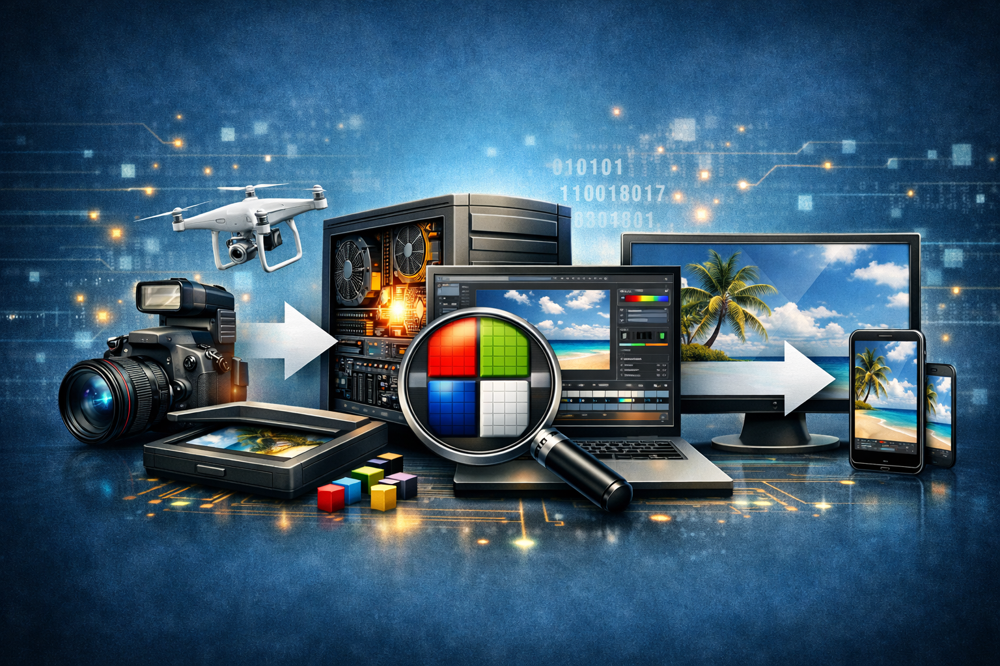
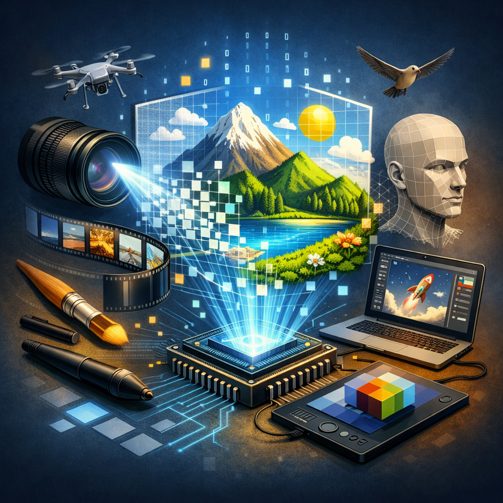
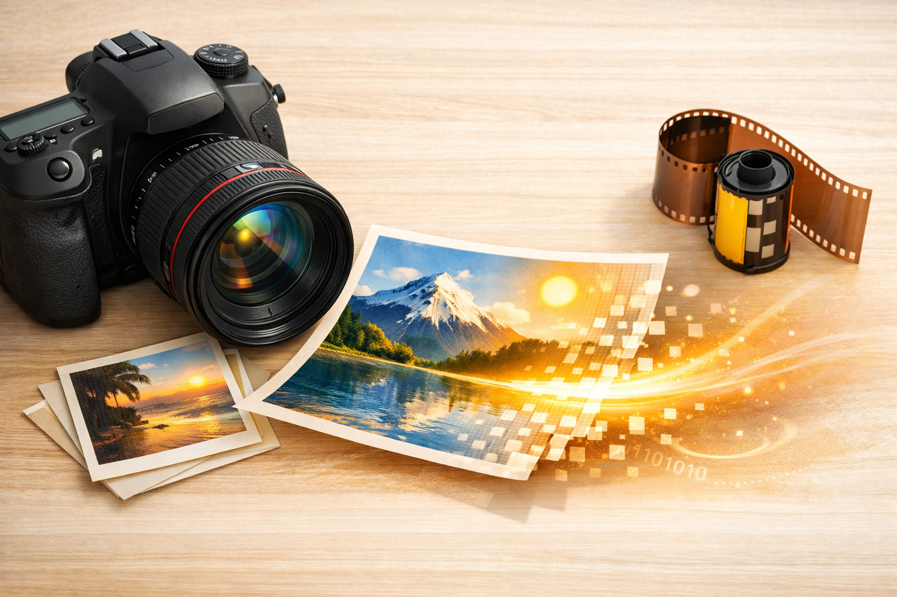
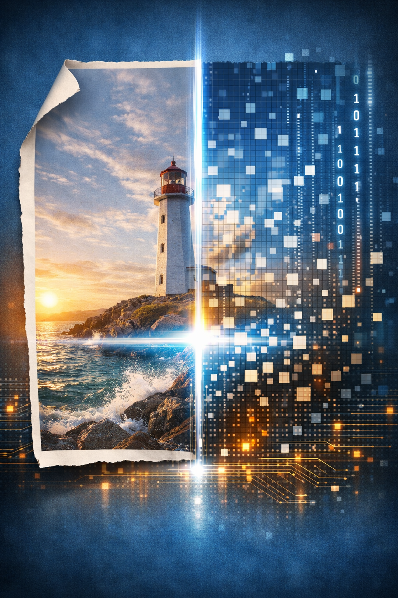
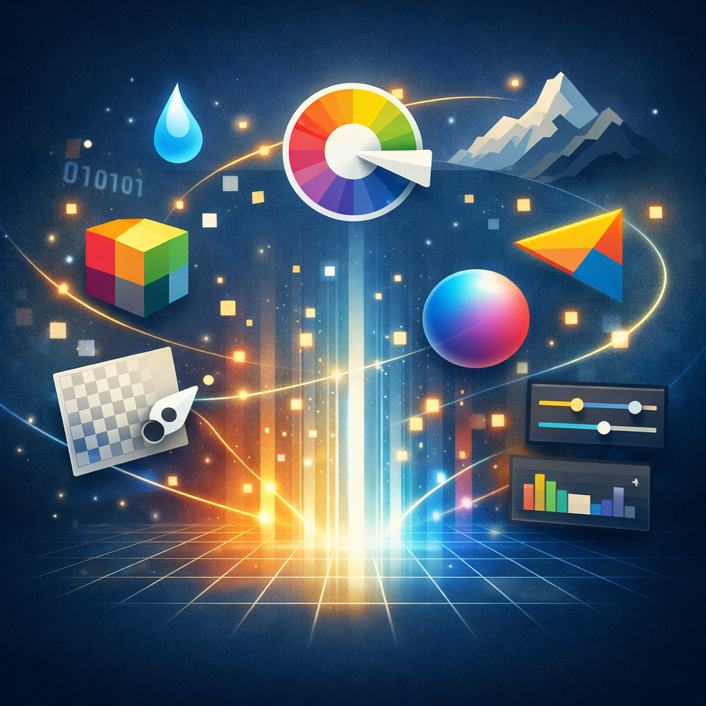
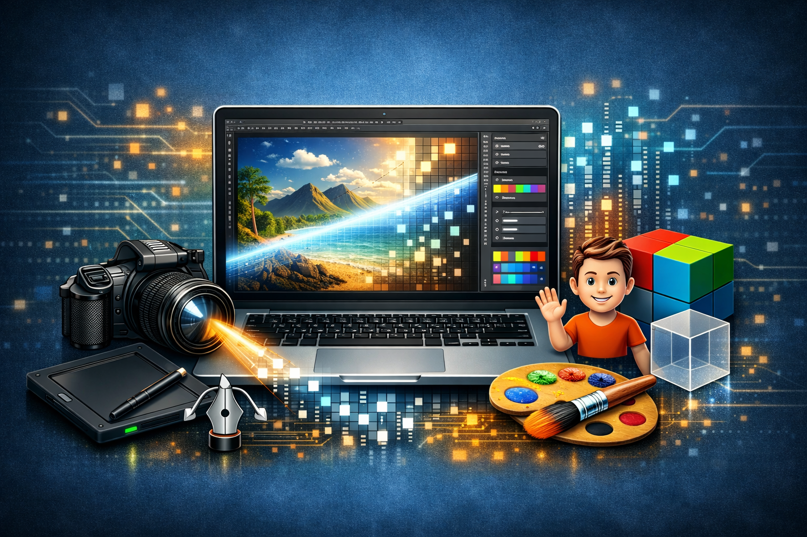
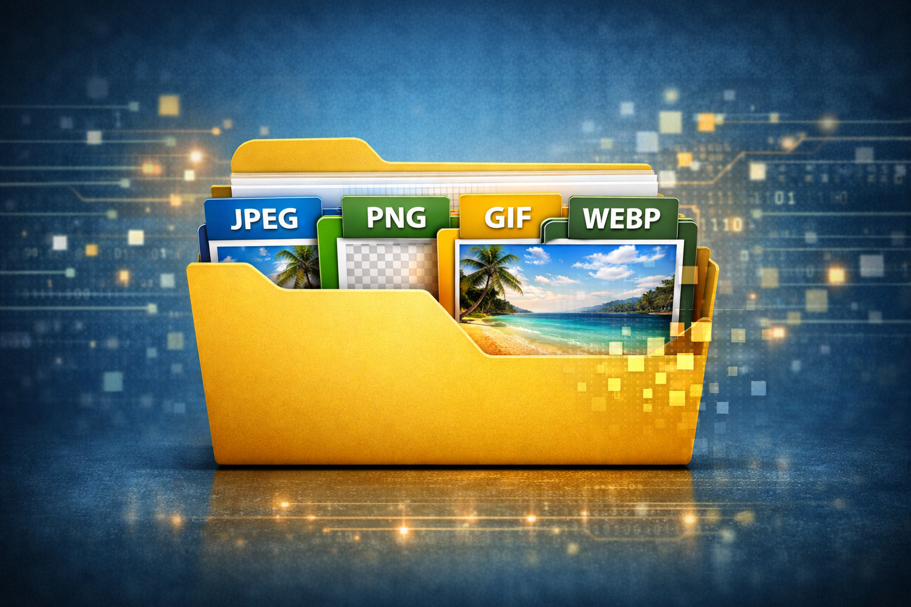
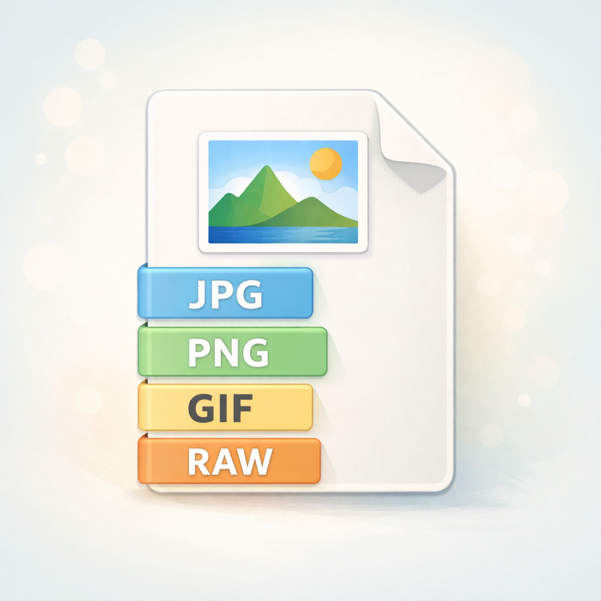

3.1 IMÁGENES DIGITALES
¿QUÉ SON?
Las imágenes digitales son representaciones visuales formadas por información numérica que puede ser interpretada por dispositivos electrónicos. Estas imágenes están compuestas por millones de pequeños puntos llamados píxeles, que juntos crean la imagen completa.
Las imágenes digitales son ampliamente utilizadas en fotografía, diseño gráfico, publicidad, educación y entretenimiento debido a su facilidad de almacenamiento, edición y distribución.
Características
- Se almacenan en archivos digitales.
- Están formadas por píxeles.
- Pueden ser editadas mediante software especializado.


3.2 PROPIEDADES DE LA IMAGEN DIGITAL
¿Cuáles son?
Las propiedades de una imagen digital determinan su calidad visual y el espacio que ocupa en un dispositivo. Entre las más importantes se encuentran la resolución, el tamaño, la profundidad de color y el formato de almacenamiento.
Estas características influyen directamente en la nitidez, el nivel de detalle y la velocidad de carga de una imagen cuando se utiliza en sitios web o aplicaciones.

Propiedades principales:
- Resolución
- Dimensiones
- Profundidad de color
- Contraste
- Brillo
- Saturación

3.3 PIXEL
¿Qué es?
El píxel es la unidad más pequeña de una imagen digital. Cada píxel almacena información de color y brillo que, al combinarse con millones de otros píxeles, forman la imagen completa que observamos en una pantalla.
La calidad de una imagen suele depender de la cantidad de píxeles que posee. A mayor número de píxeles, mayor será el nivel de detalle y definición.
Características:
- Captura fotográfica
- Escaneo
- Diseño digital
- Generación por computadora


3.4 ¿CÓMO SE CREAN LAS IMÁGENES DIGITALES?
¿Qué son?
Las imágenes digitales pueden obtenerse mediante distintos métodos, como cámaras fotográficas, escáneres o programas de diseño gráfico. Todos estos procesos convierten la información visual en datos digitales que pueden ser almacenados y editados.
Gracias a la tecnología actual, también es posible generar imágenes completamente digitales mediante software de ilustración, modelado 3D o inteligencia artificial.


Métodos
- Captura fotográfica
- Escaneo
- Diseño digital
- Generación por computadora
3.5 ESCÁNER
¿Qué es?
El escáner es un dispositivo que permite convertir fotografías, documentos o ilustraciones físicas en archivos digitales. Funciona capturando la imagen mediante sensores de luz que transforman la información visual en datos electrónicos.
Su uso es muy común en oficinas, bibliotecas y centros educativos para preservar documentos importantes en formato digital.
Ventajas
- Conservación digital
- Fácil almacenamiento
- Edición posterior
3.6 FOTOGRAFÍA
¿Qué es?
La fotografía digital consiste en capturar imágenes mediante dispositivos electrónicos equipados con sensores de imagen. Estos sensores convierten la luz en datos digitales que posteriormente forman una fotografía.
Actualmente la fotografía digital es una de las principales fuentes de creación de imágenes para medios de comunicación, publicidad y redes sociales.
Elementos importantes
- Sensor
- Lente
- Resolución
- Iluminación


3.7 CREACIÓN DIRECTA EN PROGRAMAS DE GRÁFICOS
¿Qué es?
Muchas imágenes digitales son creadas directamente en programas especializados como Photoshop, Illustrator, CorelDRAW o GIMP. Estas herramientas permiten diseñar ilustraciones, logotipos, animaciones y material publicitario.
La creación digital ofrece una gran flexibilidad, ya que permite modificar colores, formas, tamaños y efectos de manera rápida y precisa.
Programas populares
- Adobe Photoshop
- Adobe Illustrator
- CorelDRAW
- GIMP


3.8 FORMATOS DE IMAGEN
¿Qué son?
Los formatos de imagen son estructuras que determinan cómo se almacena la información gráfica dentro de un archivo. Cada formato posee características específicas relacionadas con la calidad, transparencia y nivel de compresión.
Entre los formatos más utilizados se encuentran JPG para fotografías, PNG para imágenes con transparencia, GIF para animaciones y SVG para gráficos vectoriales.
Principales formatos:
-
JPG
- Alta compresión
- Ideal para fotografías
- Soporta transaprencia
- Mayor calidad
- Permite animaciones
- Alta calidad
- Archivos muy pesados
- Basado en vectores
- Escalable sin perder calidad
PNG
GIF
BMP
SVG

